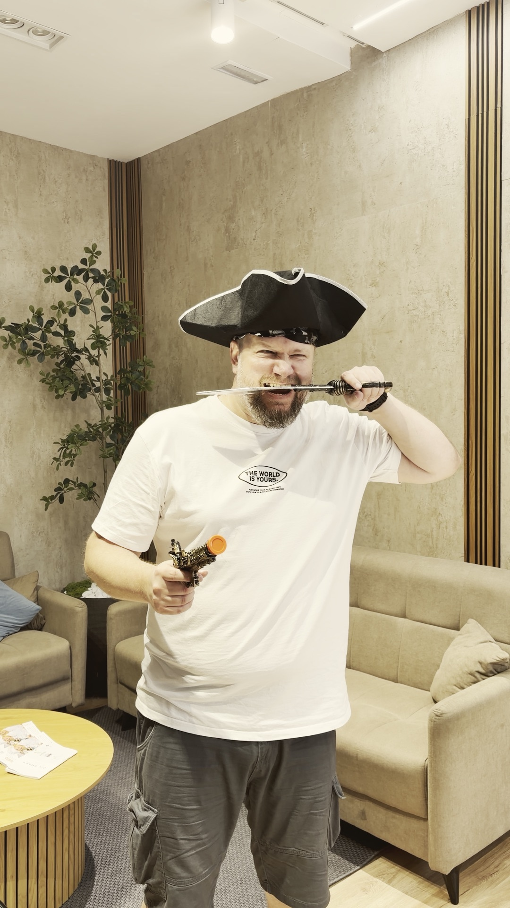
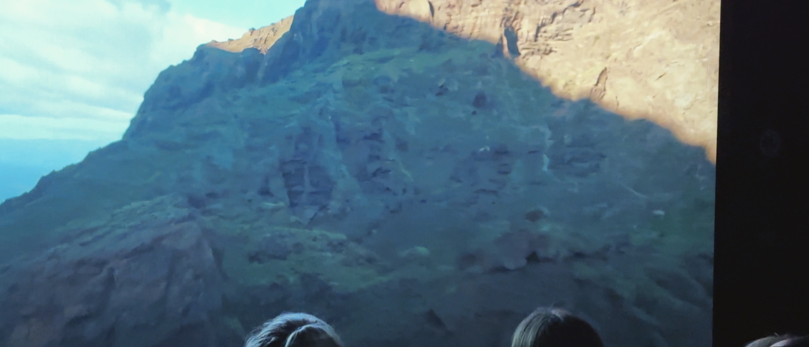
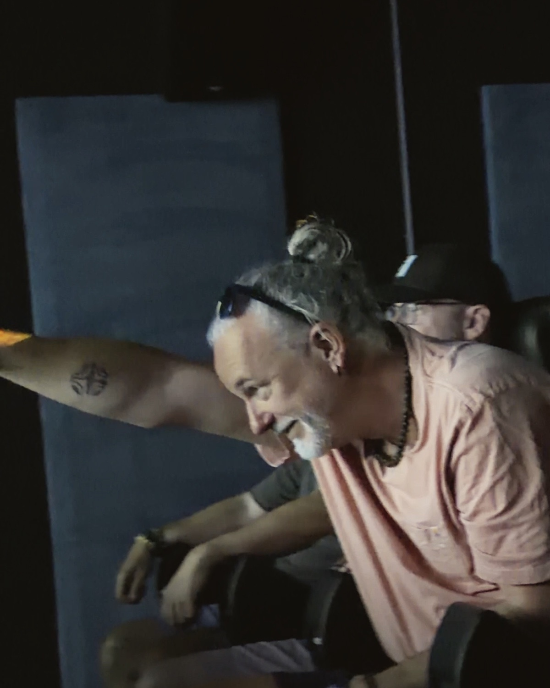
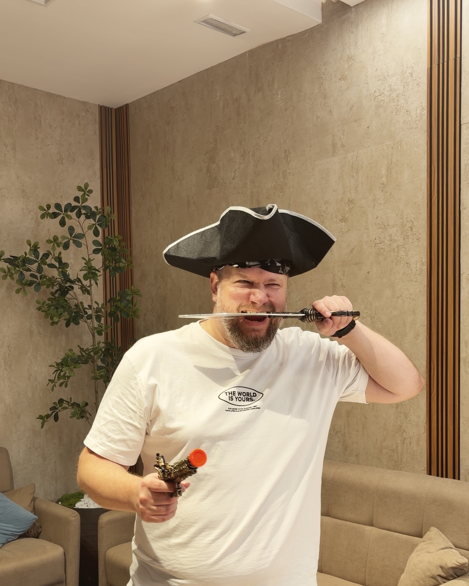
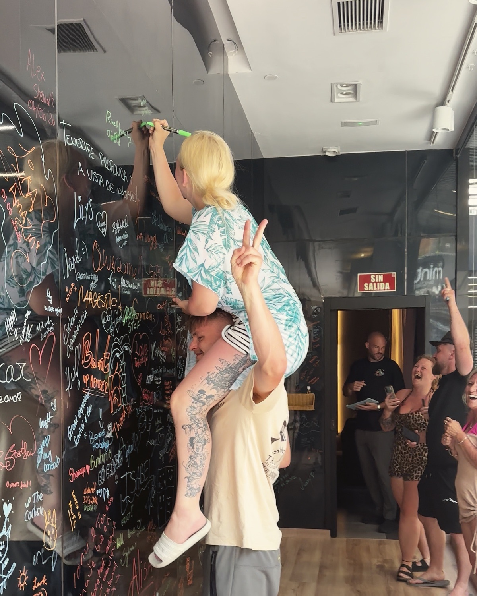
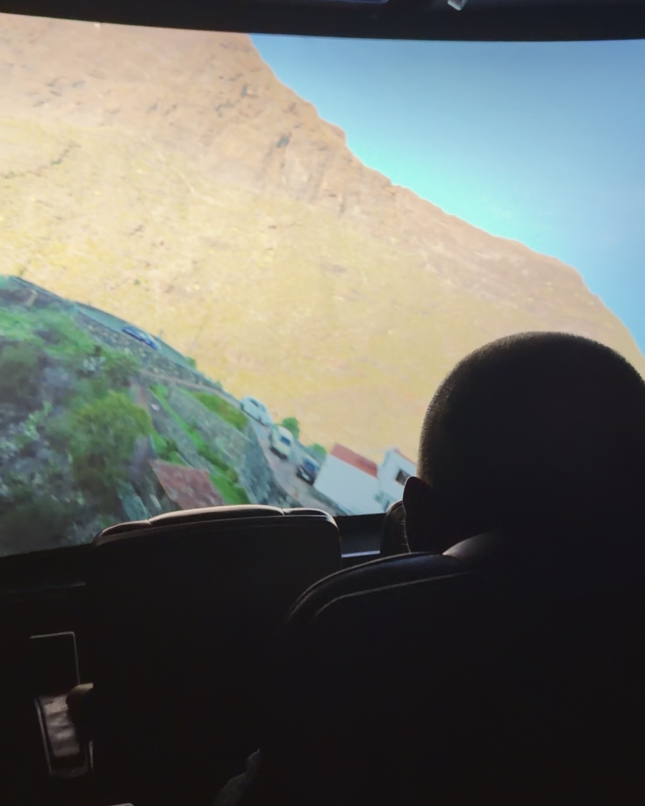
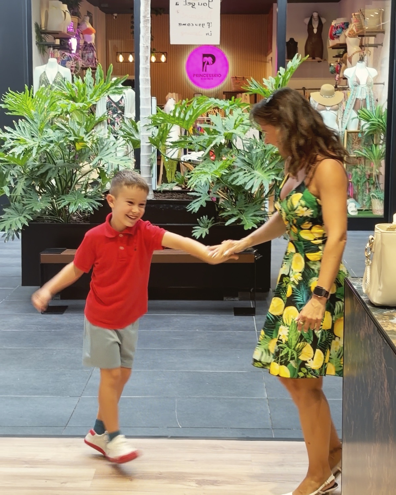
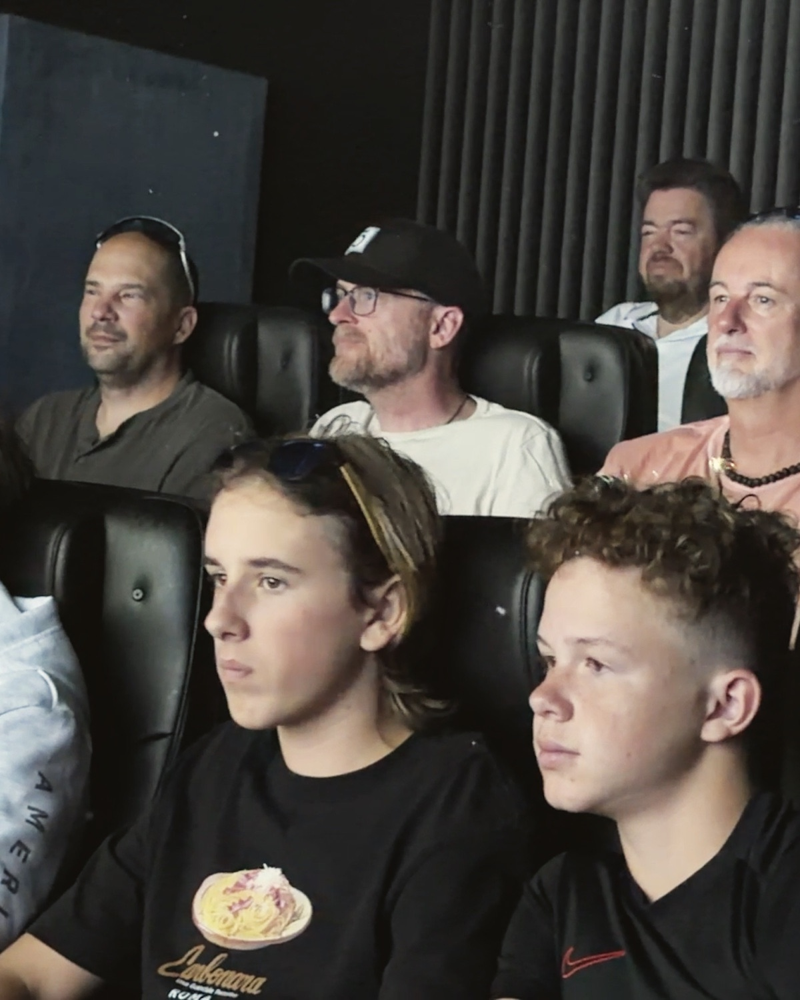

A követőszám a régi kor relikviája.
10 000 követő, 40 kedvelés: ismerős? Az új korban minden poszt tiszta lappal indul. Nem az számít, hányan követnek, hanem hogy hányan nézik végig.
Interest media ügynökségAz érdeklődés kora, 2026

Borító: FlyX Tenerife, ügyfelünk
ii. KiáltványIgen, a nevünkben még ott a social.
Tíz évig az számított, hány követőd van. Ez a kor véget ért. A feed már nem azt mutatja, kit követsz, hanem azt, ami valóban érdekel.
A legtöbb vállalkozás még a régi kor szabályaival játszik: posztol és reménykedik. Mi nem láthatóságot építünk, hanem rendszert, ami az érdeklődést bevétellé alakítja. És ez minden számon látszik.

iii. Három törvényA régi korban lájkoltál. Az új korban mentesz.
Mentsd el, ami érdekel ezeken az oldalakon. Az auditra visszük.
10 000 követő, 40 kedvelés: ismerős? Az új korban minden poszt tiszta lappal indul. Nem az számít, hányan követnek, hanem hogy hányan nézik végig.
Minden megjelenésért a legjobb alkotókkal versenyzel, nem a konkurenciáddal. Ami érdekes, azt a platform ingyen viszi el milliókhoz. Ami unalmas, azt büdzsével sem lehet megmenteni.
Az új kor stratégiája: adatból tudni, mi érdekli az embereket, és rendszert építeni, ami az érdeklődést bevétellé alakítja.
iv. A munkaÜgyfél: FlyX Tenerife






v. SzolgáltatásokEgy csapat
Nem csak hirdetések: a teljes online jelenlétedet lefedjük, egyetlen csapattal, az új kor szabályaira épített rendszerben.
Hookok, kreatív irány, gyártás: a kampány motorja a kreatív. Ezt mi is elkészítjük, a koncepciótól a kész videóig.
Feed, Stories, Reels, TikTok, egységes stratégiával, egységes hanggal. Content calendar, community management, copywriting.
Meta, TikTok és Google kampányok, amik nem csak elköltik a büdzsét, hanem ROAS-t termelnek. Napi optimalizálás, A/B tesztelés, skálázás.
Gyors, mobilra optimalizált landingek és weboldalak, amik konvertálnak, nem csak jól néznek ki.
Lead-követés, e-mail szekvenciák, automatizált tölcsérek. Egyszer beállítjuk, utána dolgozik helyetted.
Stratégiai szintű marketing tanácsadás: kampánystratégia, funnel audit, piaci pozicionálás. Partnerek vagyunk, nem kivitelezők.
vi. Számok300M+ Ft kezelt büdzsé 2022 óta
ROAS, a legjobb eredményünk e-commerce kampányban
Ajtó webshop, Google Performance Max
bevétel egy hét alatt, B2B Meta kampányból
Csarnoképítő ügyfél
ROAS ünnepi kampányban, 8M+ Ft bevétel
Karóra webshop
jelentkezőnként: ~5700 jelentkező 600K Ft költésből
Egészségügyi webinár
„Egyszer már leállítottuk a Facebook hirdetéseinket, mert egyszerűen nem érte meg. Miután megismertük Olivért, adtunk egy újabb esélyt. Már az induláskor is volt vásárlás – olyan számokat produkált, amit eddig nem is láttunk.”
„Profi csapatot szerettem volna az indulás után. Mind Facebook/Instagram, mind weboldal és hirdetés területén profi kampányokat készítenek. Rövid időn belül jöttek az eredmények – nekem semmi dolgom nem volt velük.”
„Minden decemberben rettegtünk a hirdetési áraktól. Idén először éreztük úgy, hogy az ünnepi szezon nekünk dolgozik – nem ellenünk.”
„A SocialStream profi módon készítette el a weboldalam. Mindenkinek tetszett az igényes és könnyen áttekinthető tartalom! Csak ajánlani tudom őket.”
vii. EmberekTenerife és Budapest

Dániai tanulmányaim alatt szereztem meg az első ügyfelemet. Aztán Meta Marketing Pro-ként közelről láttam, hogyan gondolkodnak a legkomolyabb márkák, amikor valódi pénz van a kampányban, és azt is, ahogy a régi szabályok a szemünk előtt érvényüket vesztik.
2022-ben azért alapítottam a SocialStreamet, mert ezt a gondolkodásmódot itthon nagyon kevés vállalkozás kapta meg eddig. Azóta 300M+ Ft büdzsét kezeltünk, specialistákból és fanatikusokból álló csapattal.
Olivér, alapító

Alapító & kampánystratéga
Ő olvassa az új kor szabályait: adatból dönti el, mibe fektessük a figyelmet, és miért fogja azt bárki megnézni.

Kreatív & tartalomgyártás
Ami megállítja a hüvelykujjat, az ő keze munkája. Hookok, forgatás, kreatív irány, az új kor nyelvén.

Produkció & szerkesztés
A gyártás motorja. Nála áll össze nyersanyagból kész tartalom: vágás, ritmus, precizitás, határidőre.
Havonta legfeljebb két új partner. Partnerek vagyunk, nem kivitelezők.
viii. Az auditNincs sablonajánlat. Nincs kötelezettség.
30 perces ingyenes audit: megnézzük a kampányaidat, a landing page-edet, az ajánlatodat. Megmondjuk őszintén, hol játszol még a régi kor szabályaival, még fizetés előtt.
Havonta legfeljebb két új partner.